AssistEdge is an edge computing-based accessibility platform that enables real-time communication by integrating American Sign Language (ASL) alphabet recognition, speech-to-text, text-to-speech, and facial emotion recognition. The system assists communication between individuals who rely on sign language and the wider community by converting information between visual, audio, and text modalities.
The platform uses multiple Raspberry Pi devices to process audio and video data at the edge, providing low-latency and real-time interactions. A web-based dashboard displays recognition results and analytical insights into communication patterns and audience emotions.
Language: Python, JavaScript, HTML, CSS
Frontend: React
Backend: Flask
Others: MQTT, Socket.IO, REST APIs
AssistEdge Architecture
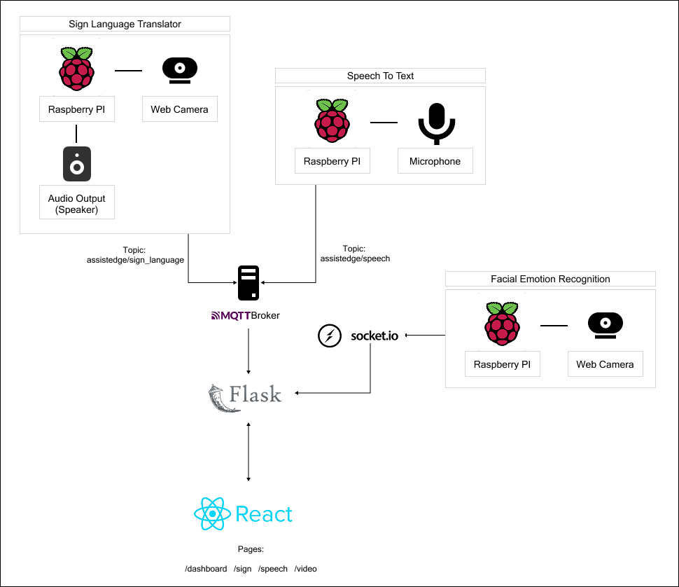
AssistEdge Interfaces
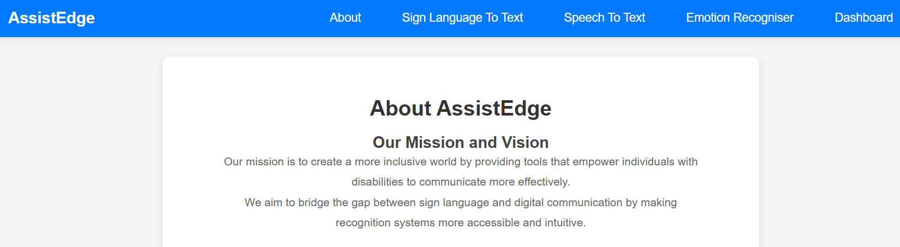
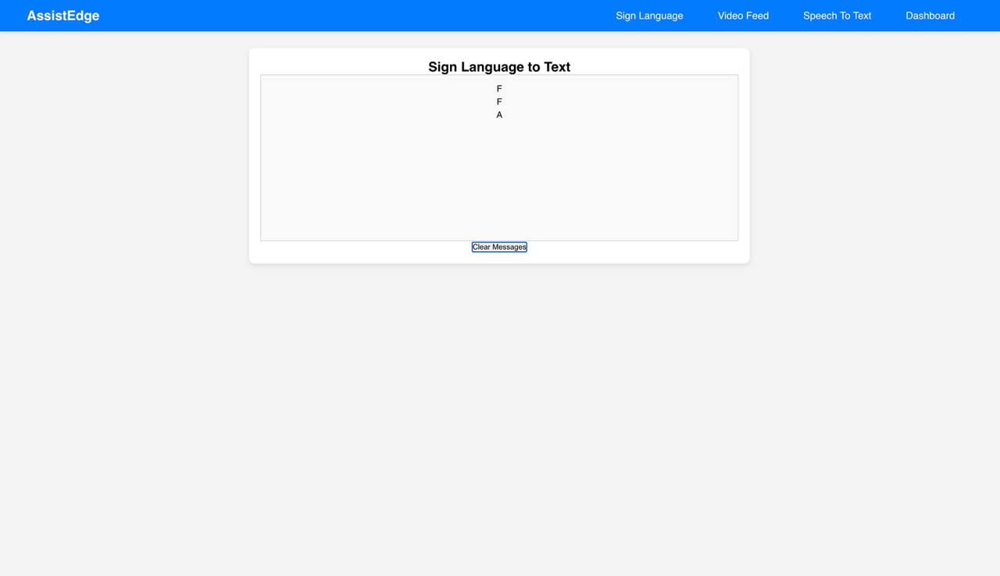
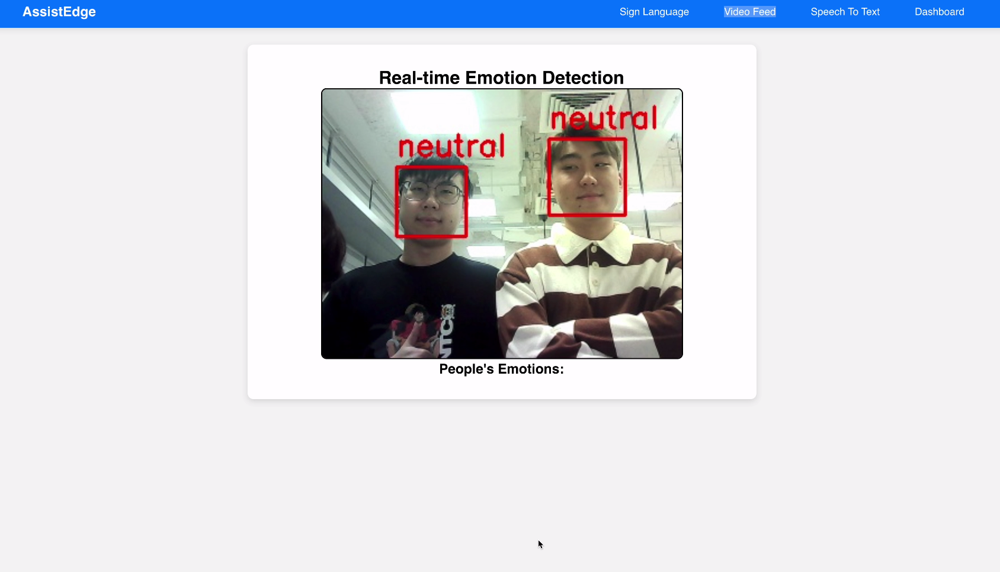
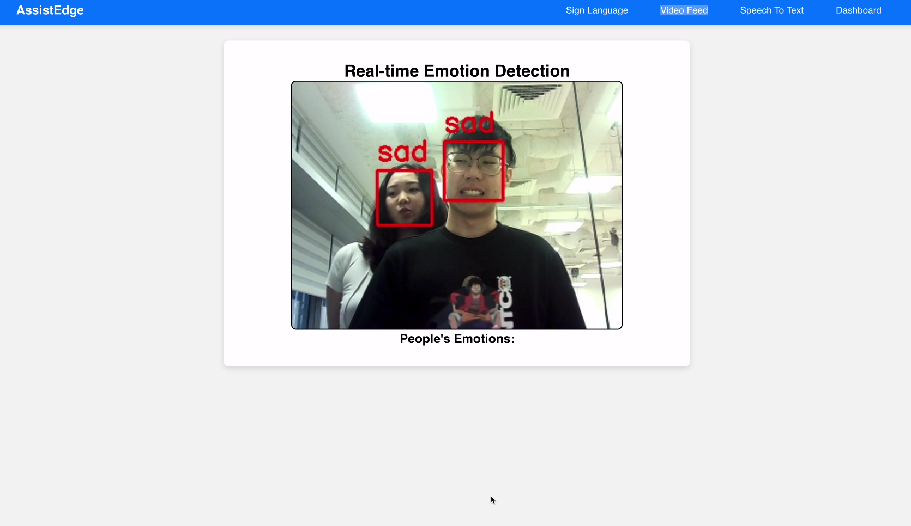
AssistEdge Dashboard
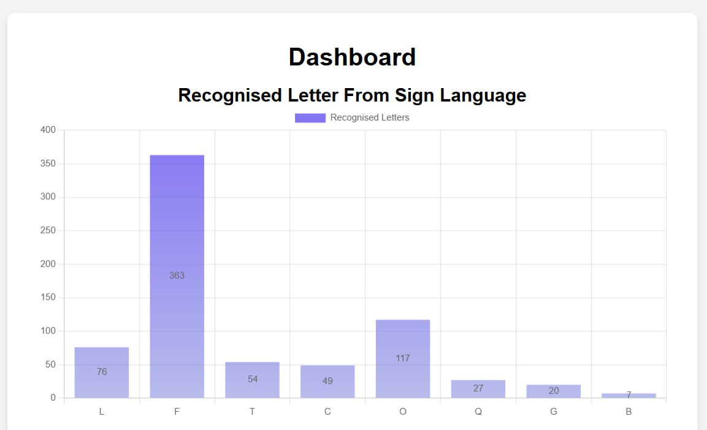
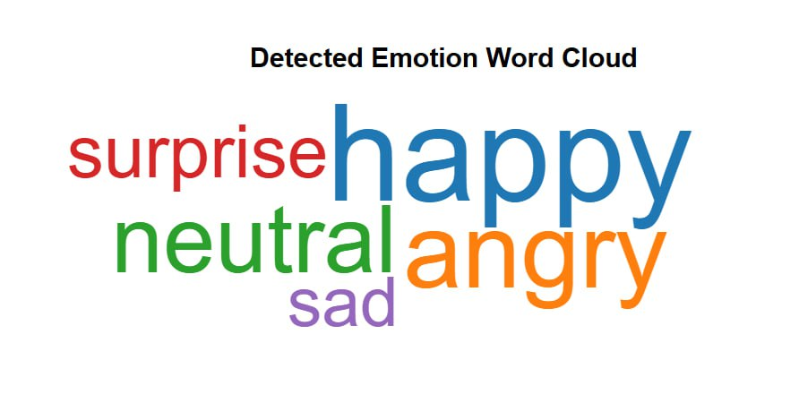
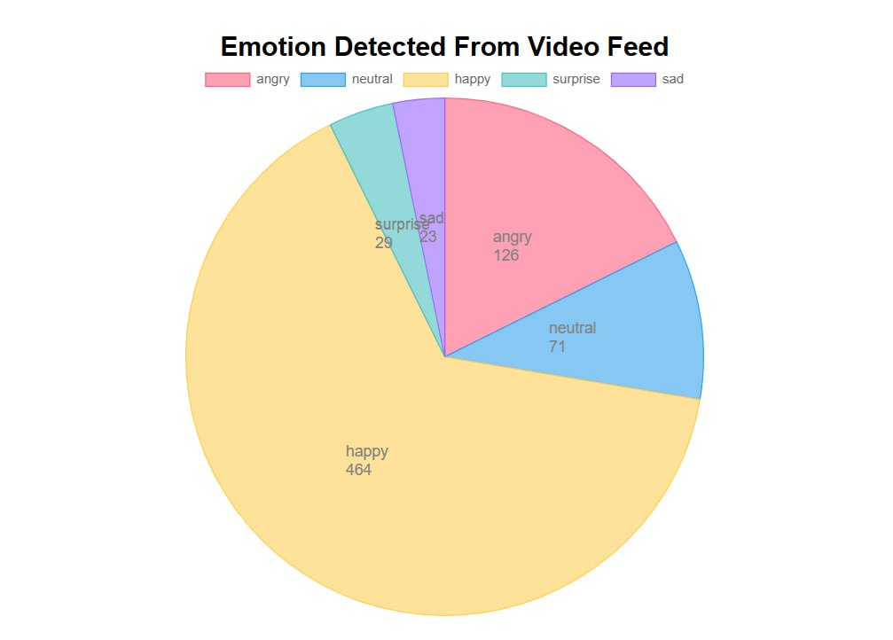
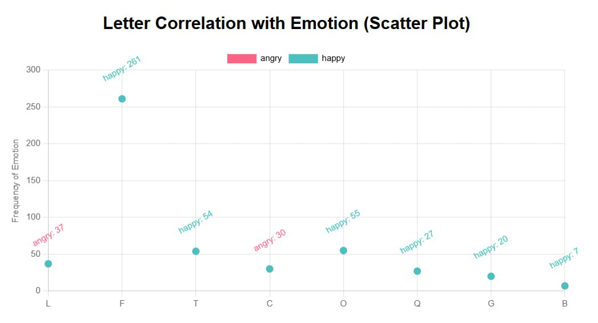
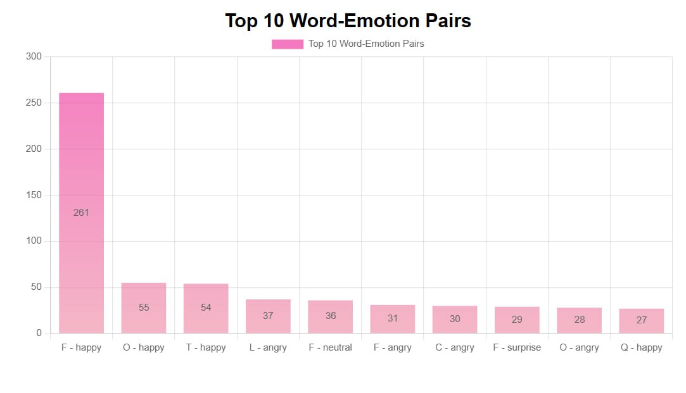
AssistEdge Poster Summary
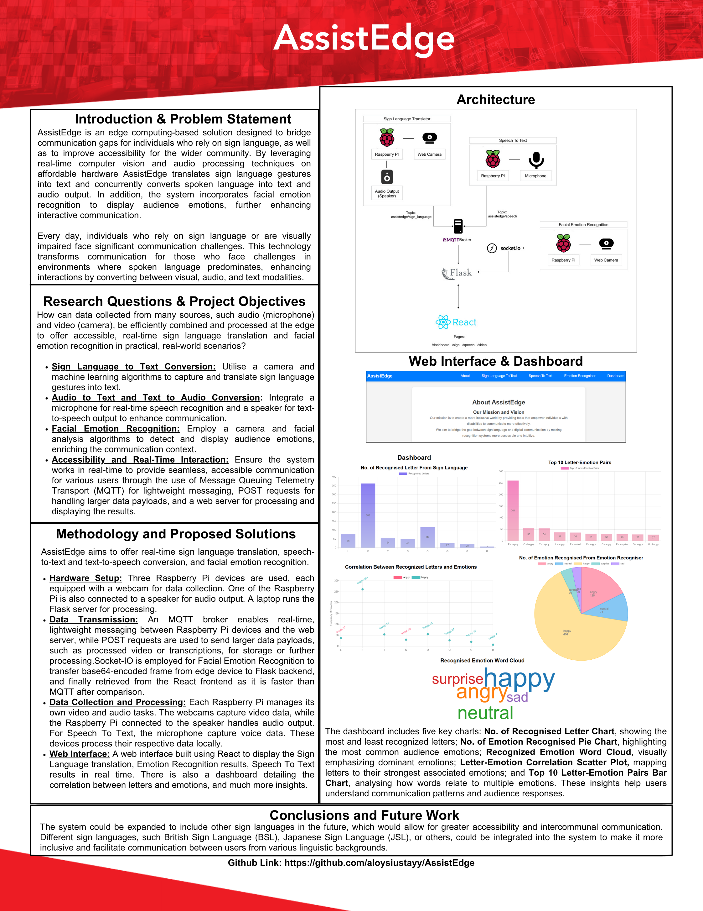